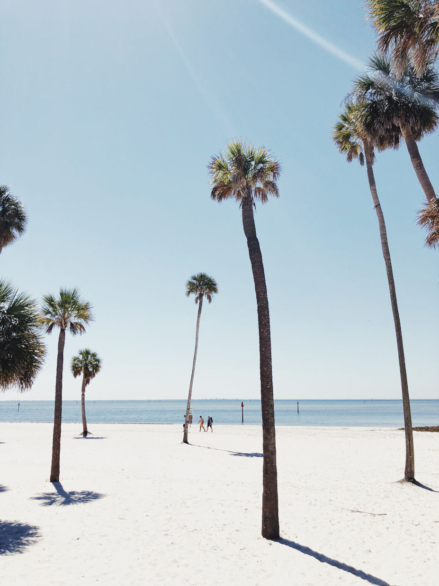
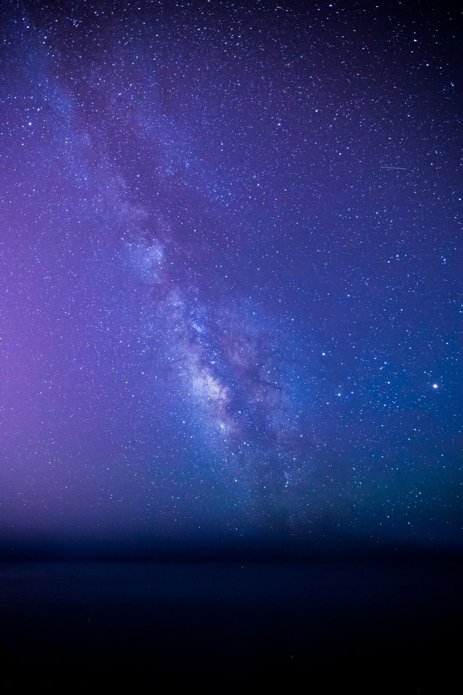
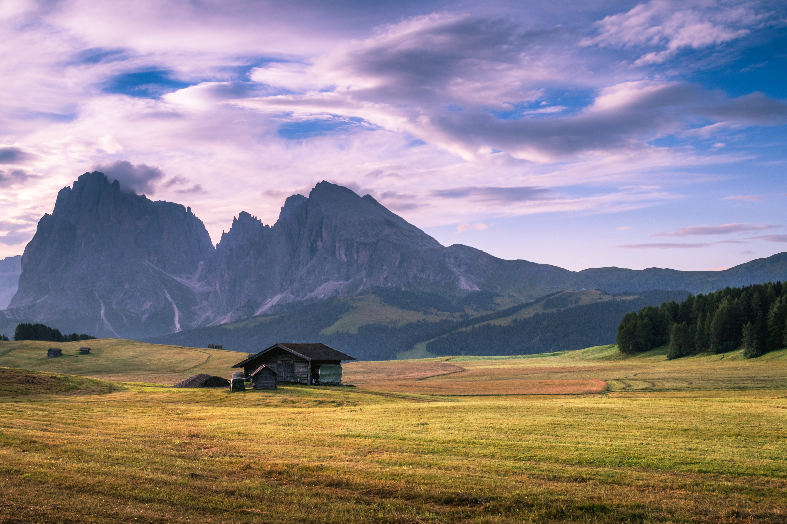

Duotone JS
Creates a dual-tone image from any other image
Usage:
Specify the colours you wish to use by adding a data-highlight and data-lowlight attribute to your images. Include the Duotone JS script somewhere in the page and apply the effect with "new Duotone(Selector);", where "Selector" matches any other image. Your images must have width and height attributes.
<img class="duo" data-highlight="#0CF" data-lowlight="#013" width="927" height="1246" src="example/dave-ruck-1075684-unsplash.jpg" alt="example" />
<script src="duotone/duotone.0.2.js"></script>
<script>
(function(){
new Duotone('.duo');
})();
</script>
Examples
Photo by Dave Ruck on Unsplash
Photo by Chris Murray on Unsplash
Photo by Ferenc Horvath on Unsplash
Gradients
V0.2 introduces the ability to use gradients instead of just flat colours. To use, specify the angle and each colour in the gradient in the data-lowlight or data-highlight attributes (e.g. data-highlight="90,#91b6f5,#cff58b")
Photo by Karsten Wurth on Unsplash